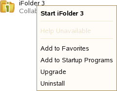

3.1 Starting the iFolder Client
When iFolder is running, the iFolder Services icon  appears in
the Notification area of the taskbar. iFolder is integrated in the
desktop environment. The iFolder emblem (green “i”)
appears in
the Notification area of the taskbar. iFolder is integrated in the
desktop environment. The iFolder emblem (green “i”)  appears
on iFolders when they are viewed in a file manager, on the desktop,
or in the iFolder browser.The encrypted iFolder is indicated by
the emblem (locked folder)
appears
on iFolders when they are viewed in a file manager, on the desktop,
or in the iFolder browser.The encrypted iFolder is indicated by
the emblem (locked folder)
IMPORTANT:The Notification area of the taskbar must be enabled in order for the iFolder Services icon to be displayed when iFolder is running.
You can work locally with files in your local iFolders at any time. Whenever the iFolder client is running, it logs the changes you make to local iFolder data as you work. If you make changes to local iFolder data when iFolder is not running, iFolder identifies and logs the differences the next time you start iFolder.
When iFolder is not running, iFolders appears as a normal
folder  in
the file manager or on the desktop. You can access files in your
local copy of an iFolder, but you cannot manage iFolders. In addition,
you must log in to an account to create an iFolder or synchronize
its files.
in
the file manager or on the desktop. You can access files in your
local copy of an iFolder, but you cannot manage iFolders. In addition,
you must log in to an account to create an iFolder or synchronize
its files.
For information about stopping the iFolder client, see Section 3.2, Exiting the iFolder Client.
3.1.1 Linux
Starting iFolder Automatically on Login
To enable iFolder to start automatically when you log in to the desktop, do one of the following:
- Open the applications menu, click , locate and right-click , then select from
the menu.

- Make sure iFolder is running when you log out, then save the session setup. Select this session option when you log in to the desktop.
- Open a terminal window, log in as the root user, then run /opt/gnome/bin/gnome-session-properties to add iFolder as a program to start when you log in to your computer.
To disable iFolder from starting automatically on login, do one of the following:
- Open the applications menu, locate and right-click , then select .
- Make sure iFolder is not running when you log out, then save the session setup. Select this session option when you log in to the desktop.
Starting iFolder on Demand
-
Log in to your computer with the local Linux user identity you want to use when you create iFolders.
-
Use one of the following methods to start iFolder:
- In the taskbar, open the applications menu, click , locate by searching or scrolling through the available options, right-click iFolder 3, then select .
- Open a terminal shell, then enter
/opt/novell/ifolder3/bin/ifolder
3.1.2 Windows
Starting iFolder Automatically on Logon
When you install the iFolder client, you can configure iFolder to start automatically on logon by selecting as one of the install options.
To enable iFolder to start automatically when you log in to the desktop:
-
Right-click the iFolder Services icon
,
then select to open the iFolder Preferences
dialog box to the tab. -
Select , then click .
-
Click to close the iFolders Preferences dialog box.
To disable iFolder from starting automatically when you log on to the desktop:
-
Right-click the iFolder Services icon, then select to open the iFolder Preferences dialog box to the tab.
-
Deselect , then click .
-
Click to close the iFolders Preferences dialog box.
Starting iFolder on Demand
-
Log on to the computer with the local Windows user identity you want to use when you create iFolders.
-
If iFolder does not start automatically on successful logon, start iFolder by clicking , then select the application.